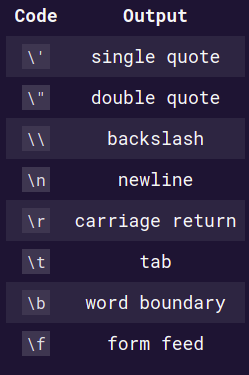
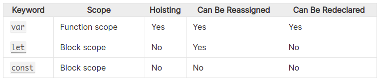

3. Basic JavaScript #
Created Wednesday 08 July 2020
Data types #
- JavaScript is dynamically typed.
- There are 8 data types, divided into categories:
- 7 primitives (immutable datum represented directly at the lowest level of the language)
- 1 non primitive type -
object
- There are two composite types (both are technically
object) though.- Array
- Function - a callable object.
| Popularity | Name | Used for | Comment |
|---|---|---|---|
| 1 | string | both strings, characters | Unicode OK |
| 2 | number | integers and floats | |
| 3 | boolean | boolean values | true, false are keywords |
| 4 | object | Made of primitives, objects | |
| 5 | undefined | default value for uninitialized variable | is an object |
| 6 | null | sentinel value marking absence | is an object |
| 7 | symbol | Store memory location | |
| 8 | bigint | Number with arbitrary precision | added ES2020 |
number- For both integers and floats.bigintstring- both kinds of quotes are OK, you can even use backticks. Concatenation using+. Strings can be like numbers(and vice versa). e.g. '2.3'*2 = 4.6.  character same as C++. Strings can span multiple lines.boolean(true/false)Symbolundefined- not been assigned(garbage values are avoided this way)nullobject- everything except the primitives is anobject, including functions, arrays etc.
- non-
objecttypes are called primitve data types. - Everything is an
object, except primitives. - All primitives have
objectversions.
Note:
- An
objectin JS is simply a hashmap with key-value pairs. A key is always astring, and a value can be anything(primitives, functions, objects). - All primitives are immutable.
- This is quite visible in case of strings.
const x = 'Sanjar'; x[1] = '2'; // no error, but the operation doesn't happen x === 'Sanjar'; // true, no change NaN- result of number • nonNumber. It is a number.Infinity- anumber.
String #
-
Single quotes and double quotes are equivalent.
-
Concatenate using
+ -
Escape char and rules same as Python, C++, Java.
-
Numerical strings interact just like numbers, except concatenation. Like so:
‘2’ _ 3 // number 6 ‘2’ _ ‘3.2’ // number 6.4 ‘2’ + ‘3’ // string ‘23’ - concatenation is concatenation
-
JS is loosely typed.
Variables #
- Declaration and intialization are separate concepts in JS. Declarations are a must.
- There are 3 kinds of variables:
- let - simple variable(i.e. reassignable). Syntax:
let x = 0; - const - non reassignable variable(variable contents may be changed). Must be intialized with declaration. Same as C++'s
const. Syntaxconst k = 'stingy symbol table'; - **var **- leaks out of block scope. Follows all other scoping rules. Syntax:
var k = 'var wars';
- let - simple variable(i.e. reassignable). Syntax:

- All variables follow the same syntax - for declaration, initlialization, assignment, access. The syntax are:
- Declaration:
let x;,const p = 24;,var k = 'hi'; - Initialization/assignment:
let x = 2;,p = 'sanjar’ - Access(reading): Just write the variable name.
sum = x + y;,f(x).
- Declaration:
Note:
- Uninitialized variables store the value
undefined😁️. Example:let x; console.log(x) // undefined - Declarations can be chained. i.e
let x = 2, y = [1, 2], z = 3;. - Variables cannot be redeclared, except for
var. - Avoid using
varin new codebases. - Internally, var, let, const, function, class, function _are all hoisted. But only
var,functionandfunction_`are allocated memory(set to`undefined). - JavaScript has 4 scopes - local, enclosing, global, builtin. Same as python3. Discussed in detail
- All inner scopes can read/write to variables of outer scope. Just like C++.
Variable naming rules #
- Symbols → a-z, A-Z, 0-9, _, $
- Rules:
- Name cannot start with a number
- Keywords cannot be used.
- Basically, C++ rules with a dollar sign.
- Note: You can use other language scripts like Cyrillic, Arabic etc. English is recommended.
var vs let #
-
The only difference is that var has a function scope, a more free scope. i.e it can leak out of top-level blocks, but not out of the function.
if(true) var x = 2; console.log(x); // prints 2, as x leaked out from the block, just like python3
// Run separately if(true) let x = 2; // x respects block scope, goes out of scope. Just like C++, Java console.log(x); // Error x is undefined
-
So
varhas only two anomalies(w.r.t C++):- It violates block scope, i.e leaks out to the nearest enclosing function scope.
- It can be redeclared.
-
varis identical to a python3 variable. Simple.💡️
Hoisting(JS feature) #
- Hoisting is JavaScript’s default behavior of moving all declarations to the top of the current scope (block or function).
- Only declarations are hoisted, not initializations.
- Gotchas about hoisting, there are 2:
- Intialization - During hoisting, memory is not allocated for
let/const/classvariables.var/function/function*are allocated memory(set toundefinedor function body). - Temporal Dead Zone(
ReferenceError) - It refers to the time(phase) between the declaration and intialization, for a variable. Accessinglet/const/classvariables before their declaration(in code) is an errorReferenceError(variable not initalized).- This is irrelevant for functions, since a pointer is saved and the JS engine will find and execute the function.
- It’s relevant for variables, but only if you use before declaring, which almost nobody ever does. So, practically TDZ is irrelevant for variables too.
- Intialization - During hoisting, memory is not allocated for
Note: temporal dead zone does correlate with sections of the code, but it’s actually a time period.
- Common Question - What is the value of a
letvariable outside(after) the dead zone?xis set toundefined. - Note: Hoisting and scoping are unrelated.
- Conclusion: Assume that people don’t know about hoisitng.
letandconstwere created for solving the problems with hoisting. Declare variables just like you would in C++, Python: nearest to first use.
Standard IO #
Output #
console.log(variable)- just likeprint()in Python3(newlines, virial). Works for both CLI and browser.alert(variable), for the browser. Alert is blocking: you have to click OK or press the Enter key.
Input #
prompt('message', defaultAnswer)- same asinput()in Python3. only for the browser.
Operators #
- All operators are the same(symbol and rules) as C++(bitwise, relational, increment/decrement(post and pre)), with some changes:
- Equality(string equivalent) -
==and!= - Equality(of value and type) -
===and!== **does exponentiation of numbers.>>>- makes the number unsigned after the shift.
- Equality(string equivalent) -
- Shorthand operators are allowed.
- Assignment expressions are allowed.
Code Structure #
- Semicolons - Using it at the end of a statement is preferred, because omitting it can lead to error sometimes, if not all the time.
- Indendation - JS is free-form.
- {} - code blocks
- () for for, **while **conditions.
- Comments: same as C++, both multiline and inline.
Conditionals #
- if, else, else if, ternary operator(?:;) - same as C++
- switch - same as C++
- JS does the concept of truthy values.
Loops #
- for, while, do while - same as C++
- continue and break mean the same as C++.
Functions #
- No return/parameter type required.
- Keyword
functionis used - likedefin Python3 - Name may be skipped for IIFE.
- Default params are allowed in JS, rules same as C++.
- Functions are always hoisted.
- return ends the function(obviously). Function returns
undefined, if return is absent.
Function types and syntax #
- Named function - just function.
function foo(bar1, bar2) { // code } - Anonymous functions - unhoisted. Use case - as a functor, an IIFE
x.sort( function (a) { return Number(a); }) // functor as sorting criteria // Don't call the functor, just specify it. // IIFE - Immediately Invoked Function Expression ( function(bar) { /_ code _/ }(option1) )(option2) // You have two option, use (option1) or (option2) depending on the situation. // Enclosing () are a must - They prevent namespace pollution - Lambda - passable anonymous functions. FIXME: can’t have both.
let x = function() { // storing return 2; }; x(); // calling - Inner functions - have their own content(scope). Not invocable outside parent function. Chain as many as you like.
function f() { function g() { /_code_/ } g() // invocation - OK function k() { /* code */ } // so called 'sibling' function } g()// Error - g not defined